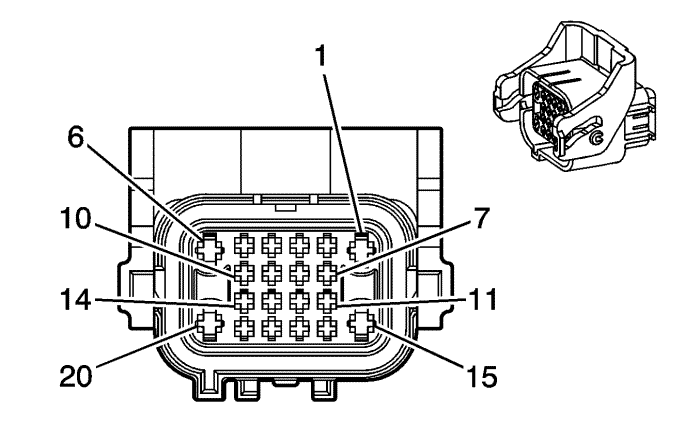
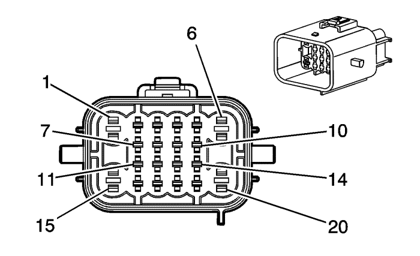

Captiva |
||||||||
|
|
|
|||||||
|
 |
 |
Información de parte de conector
| Información de parte de conector
|
Bulón | Tamaño | Color | Circuito | Opción | Función | Bulón | Tamaño | Color | Circuito | Opción |
|---|---|---|---|---|---|---|---|---|---|---|
1 | 0.35 | BK | 150 | -- | Toma de tierra | 1 | 0.35 | BK | 150 | -- |
2 | 0.35 | OG | 228 | CE4 | Control de la bomba del líquido del lavaparabrisas | 2 | 0.35 | OG | 228 | CE4 |
3 | 0.35 | PU | 5531 | -- | Señal de capó cerrado | 3 | 0.35 | PU | 5531 | -- |
4 | 0.35 | PU/WH | 9382 | -- | Referencia de 5 voltios | 4 | 0.35 | PU/WH | 9382 | -- |
5 | -- | OG/BK | 5214 | -- | Referencia baja del sensor delantero de estacionamiento | 5 | -- | OG/BK | 5214 | -- |
6 | 0.35 | BK | 150 | -- | Toma de tierra | 6 | 0.35 | BK | 150 | -- |
7 | 0.35 | PU | 34 | -- | Tensión de alimentación de los faros delanteros antiniebla | 7 | 0.35 | PU | 34 | -- |
8 | 0.35 | PU | 1197 | CE4 | Control de la bomba del lavafaros | 8 | 0.35 | PU | 1197 | CE4 |
9 | 0.35 | GN/WH | 636 | -- | Señal del sensor de temperatura del aire ambiente exterior | 9 | 0.35 | GN/WH | 636 | -- |
10 | 0.35 | OG/BK | 645 | -- | Referencia baja del sensor | 10 | 0.35 | OG/BK | 645 | -- |
11 | -- | -- | -- | -- | No se utiliza | 11 | -- | -- | -- | -- |
12 | 0.35 | BN/WH | 99 | CE4 | Señal del sensor de nivel del líquido del lavaparabrisas | 12 | 0.35 | BN/WH | 99 | CE4 |
13 | 0.35 | PU/WH | 5203 | -- | Señal del sensor de calidad del aire | 13 | 0.35 | PU/WH | 5203 | -- |
14 | 0.35 | BN/WH | 6547 | -- | Referencia baja del sensor de calidad del aire | 14 | 0.35 | BN/WH | 6547 | -- |
15 | 0.35 | BN | 41 | -- | Tensión de encendido | 15 | 0.35 | BN | 41 | -- |
16 | 0.35 | GN | 392 | -- | Control de la bomba del lavaparabrisas trasero | 16 | 0.35 | GN | 392 | -- |
0.35 | GN | 392 | CE4 | |||||||
17 | 0.35 | PU/BK | 5218 | -- | Sensor delantero derecho/medio de estacionamiento | 17 | 0.35 | PU/BK | 5218 | -- |
18 | 0.35 | BN/WH | 5217 | -- | Sensor de la esquina derecha de estacionamiento delantero | 18 | 0.35 | BN/WH | 5217 | -- |
19 | 0.35 | WH | 5216 | -- | Sensor delantero izquierdo/medio de estacionamiento | 19 | 0.35 | WH | 5216 | -- |
20 | 0.35 | PU/WH | 5215 | -- | Sensor de la esquina izquierda de estacionamiento delantero | 20 | 0.35 | PU/WH | 5215 | -- |
| © Copyright Chevrolet Europe. All rights reserved |